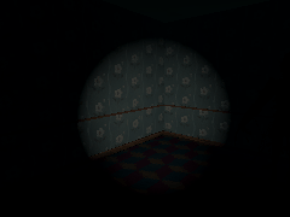

Tutorials › Make a Monster Hide Until a Flashlight Finds It
How to Make a Monster Hide Until a Flashlight Finds It in Godot 4
Dim in the dark, pale and glowing a little where a flashlight's beam falls, fading back when it moves on.

A monster you can hardly see in the dark until your flashlight finds it. The script gives each mesh of the model its own copy of every material, so revealing one monster does not light every other copy of the same model, and adds a glow made from the model's own colours. Every physics frame it asks each flashlight whether its beam reaches three points on the body: within the light's range, inside its cone and with nothing in between. It shows fast and fades back slowly, so a player who swings the light past sees it a moment too late.
Script: flashlight_reveal.gd (MIT) · Godot 4.3 or newer · its folder on GitHub
How to use it
- Make the monster a CharacterBody3D with its model under it, and attach
flashlight_reveal.gdto the CharacterBody3D. - Put your player's flashlight, a
SpotLight3D, in the groupflashlight. Any number of lights count. - Tune
dark(its colours in the dark, times this),glow,fade_inandfade_out(seconds), andheights: where on the body the beam can find it, in metres up. - A material with a glow map of its own (glowing eyes) keeps it: those still glow in the dark.
What it needs
- Godot 4.3 or newer (the Compatibility renderer is enough).
- A model with StandardMaterial3D materials; any rigged or static model works.
Try it free
The Cordatix PSX Horror Free Sampler has Papered, a figure of peeling wallpaper, with all ten of its clips and the enemy script: the code works on it as it is. In the full pack Lint, a figure of house dust, does the same through its enemy script's show_in_light settings.
How it was tested
In Godot 4.3 and 4.7.2, with Papered from the free sampler: in the dark it stays dim; the beam finds it and it shows within fade_in while another copy of the same model stays as it was; it fades back, not at once, when the beam leaves; beside the beam, behind a wall, beyond the beam's range or with the flashlight off it stays dark; the body carrying the light never blocks it.
The code
extends CharacterBody3D
## How to Make a Monster Hide Until a Flashlight Finds It in Godot 4
## Cordatix Godot 4 PSX tutorials, MIT licensed: https://github.com/GoldenSparrow-Dev/cordatix-godot-psx-tutorials
## The devlog: https://cordatix.itch.io/haunted-psx-monsters/devlog/1764265/how-to-make-a-monster-that-hides-until-your-flashlight-finds-it-in-godot-4-cordatix-psx-horror-monsters
## Dim in the dark; where a flashlight's beam falls on it, it pales and glows a little, and it fades back when the
## beam moves on. Any SpotLight3D in the group "flashlight" counts.
@export var dark := 0.5 # its colours in the dark, times this
@export var glow := 0.35 # how much it glows in the beam
@export var fade_in := 0.12 # seconds to show when the beam finds it
@export var fade_out := 0.6 # seconds to fade back when the beam leaves
@export var heights: Array[float] = [0.6, 1.1, 1.6] # where on the body the beam can find it, metres up
var reveal := 0.0 # 0 in the dark, 1 in the beam
var _mats: Array[StandardMaterial3D] = []
var _colours: Array[Color] = []
var _own_glow: Array[bool] = []
func _ready() -> void:
# its own copy of each material: revealing it must not light every monster that shares the texture
for node in find_children("*", "MeshInstance3D", true, false):
var mi := node as MeshInstance3D
if mi.mesh == null:
continue
for i in mi.mesh.get_surface_count():
var mat := mi.get_active_material(i) as StandardMaterial3D
if mat == null:
continue
mat = mat.duplicate()
var own := mat.emission_enabled # a glow map of its own (eyes, flames) stays: it glows in the dark too
if not own:
mat.emission_enabled = true
mat.emission = Color.WHITE
mat.emission_texture = mat.albedo_texture
mat.emission_operator = BaseMaterial3D.EMISSION_OP_MULTIPLY
mi.set_surface_override_material(i, mat)
_mats.append(mat)
_colours.append(mat.albedo_color)
_own_glow.append(own)
_apply()
## Whether a flashlight's beam falls on a point: the light on, the point within its range and inside its cone, and
## nothing in between (the ray skips this body and the body that carries the light).
func in_beam(light: SpotLight3D, point: Vector3) -> bool:
if not light.is_visible_in_tree():
return false
var from := light.global_position
var to := point - from
if to.length() > light.spot_range:
return false
var forward := -light.global_transform.basis.z # a light shines down its -Z
if rad_to_deg(forward.angle_to(to)) > light.spot_angle: # spot_angle is half the cone
return false
var skip: Array[RID] = [get_rid()]
var holder: Node = light.get_parent()
while holder != null and not holder is CollisionObject3D:
holder = holder.get_parent()
if holder != null:
skip.append((holder as CollisionObject3D).get_rid())
var ray := PhysicsRayQueryParameters3D.create(from, point)
ray.exclude = skip
return get_world_3d().direct_space_state.intersect_ray(ray).is_empty()
## Every physics frame: lit when any flashlight finds any of its points, then it eases to lit or to dark.
func _physics_process(delta: float) -> void:
var lit := false
for light in get_tree().get_nodes_in_group("flashlight"):
for h in heights:
if light is SpotLight3D and in_beam(light, global_position + Vector3.UP * h):
lit = true
reveal = move_toward(reveal, 1.0 if lit else 0.0, delta / (fade_in if lit else fade_out))
_apply()
func _apply() -> void:
var shade := lerpf(dark, 1.0, reveal)
for i in _mats.size():
var c := _colours[i]
_mats[i].albedo_color = Color(c.r * shade, c.g * shade, c.b * shade, c.a)
if not _own_glow[i]:
_mats[i].emission_energy_multiplier = glow * reveal
The devlog and the pack
The step-by-step walkthrough is the devlog How to Make a Monster Hide Until a Flashlight Finds It in Godot 4 (Cordatix PSX Horror Monsters 2.0) on itch.io, written for Cordatix PSX Horror Monsters, a PS1-style asset pack by Cordatix for Godot 4, Unity, Unreal and Blender.